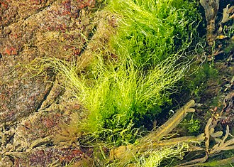

青のりの生産量 都道府県ランキング
収獲量
青のりの収獲量が全国で最も多いのは愛知県で、131 tです。全国（201 t）の65%を占めます。

| 順位 | 都道府県 | 収獲量 | 全国に占める割合 |
|---|---|---|---|
| 1位 | 愛知県 | 131 t | 65% |
PR

青のりの生産量の推移（令和2年〜令和6年）
全国の収獲量は、令和2年の315 tから令和6年の201 tへ、36%減りました。1位は入れ替わっています（令和2年は静岡県、令和3年は愛知県）。
| 年 | 全国 | 1位 | 2位 | 3位 |
|---|---|---|---|---|
| 令和6年 | 201 t | 愛知県131 t | ||
| 令和5年 | 515 t | 愛知県417 t | 静岡県98 t | |
| 令和4年 | 408 t | 愛知県260 t | ||
| 令和3年 | 486 t | 愛知県413 t | ||
| 令和2年 | 315 t | 静岡県43 t |
この数字について
- 分類：海藻の仲間
- 全国の収獲量：201 t
- この数字が表すもの：収獲量（養殖による収獲量）
- 調査：海面漁業生産統計調査（海面養殖業） 令和6年
- この品目は養殖の統計です。
- 1県分を調査（調査していない県は順位に入りません）
青のりの生産量について、よくある質問
- 青のりの生産量が日本一の都道府県はどこですか？
- 愛知県です。海面漁業生産統計調査（海面養殖業）（令和6年）で131 tでした。
- 青のりの全国の生産量はどれくらいですか？
- 201 t（令和6年）です。